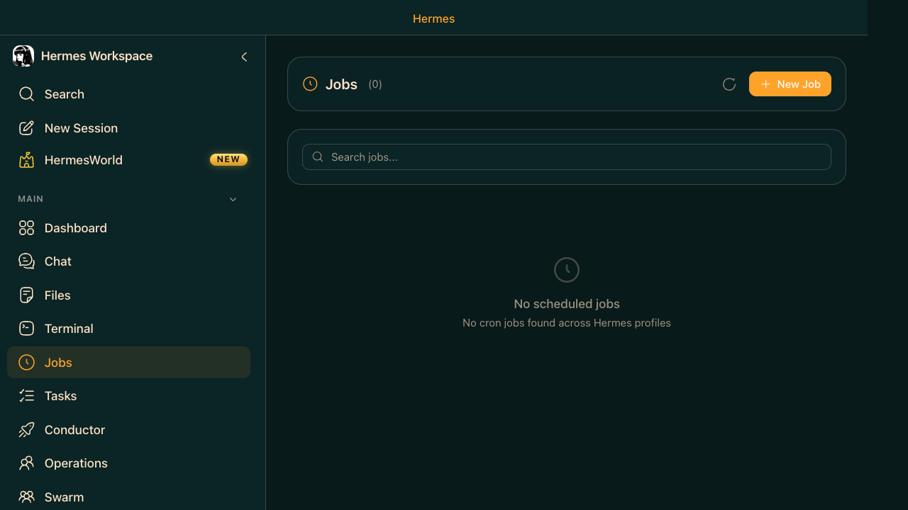

Jobs — Queued Agent Work
A Job is a unit of work you hand to Hermes and walk away from. Unlike a chat message (where you wait for the response), a Job runs in the background. You can close the browser, come back later, and inspect the result. Jobs are powered by the hermes dashboard service at :9119. They are not cron jobs by default. Cron is a scheduling feature for time-based automation; Jobs are background work items that run when triggered or queued. In practice, the dashboard keeps the job transcript, tool calls, and cost history. Any file artifacts like security-audit.md only exist if the job prompt explicitly tells Hermes to write them to disk.
- New Job — create a job from a prompt; optionally attach skills
- Job queue — see pending, running, and completed jobs
- Search — find past jobs by keyword
- Inspect — view full output, tool calls, and cost for any job
- Re-run — replay a job with the same prompt

You're in a meeting. You need a code review done by the time you're back. Create a job, close the browser, and inspect results when you return.
This saves output only if you ask it to.
Click "New Job" in the Workspace, then paste this prompt:
The job runs in the background. Close the browser — come back when it's done.
hermes dashboard is active on :9119.